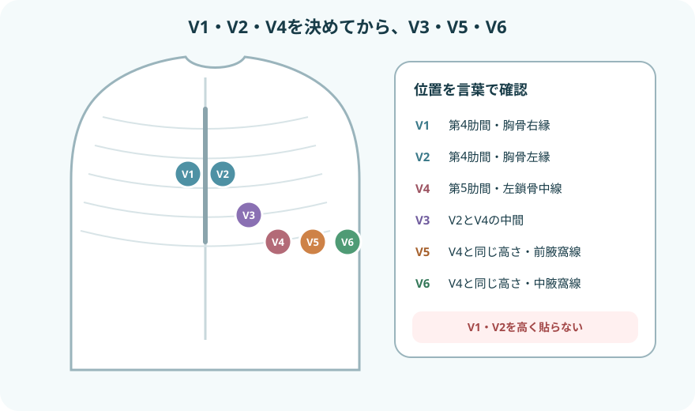

モニターと12誘導は役割が違う

- モニター心電図：心拍数・リズムを連続監視し、徐脈、頻脈、不整脈、選択した患者のST・QT変化を早く捉える
- 12誘導心電図：10個の電極から12方向を同時に記録し、不整脈、伝導障害、虚血・梗塞などの評価に用いる
- 波形が変わったら：患者と脈拍を確認し、必要時は記録を保存して12誘導心電図へつなぐ
モニター心電図を装着する
- 本人・適応・基準波形を確認
患者、監視目的、既往、不整脈、症状、ペースメーカー、指示された誘導とアラーム条件を確認する。
- 皮膚を整える
汗、皮脂、汚れを拭き、必要時は体毛を処理する。皮膚障害、創、骨突出、乳房の上を避け、平らな筋肉の少ない場所を選ぶ。
- 端子記号で接続する
RA/R、LA/L、LL/F、RL/N、V/Cなどの表示を確認する。AHA方式とIEC方式では色が異なるため、色だけで判断しない。
- 波形と患者を照合する
心拍数を実測脈拍と比べ、P波・QRS・基線が見やすい誘導を選ぶ。ケーブルの牽引と電極の浮きを直す。
- 個別にアラームを設定する
現在の心拍数、病態、既知の不整脈を基準に上下限と不整脈アラームを設定する。不要なアラームを放置・一律停止しない。
- 開始時のストリップを保存する
誘導名、日付・時刻、心拍数、症状、体位を残す。入院中の変化と比較できる基準にする。
- II誘導はP波とQRSが見やすいことが多く、基本リズムの観察に使われる
- V1に近い修正胸部誘導はP波や心室性波形の観察、V5に近い誘導はST変化の観察に使われることがある
- MCL1、MCL5、NASA誘導は修正誘導であり、標準12誘導と同じ波形ではない
- 誘導名と電極位置を記録し、途中で変更したら新しい基準波形を残す
12誘導心電図を記録する
記録前
- 本人、目的、症状の発症時刻、安静が保てるかを確認する
- 上半身と四肢を露出する理由を説明し、カーテンやタオルで羞恥心へ配慮する
- 原則として仰臥位で安静にし、会話や四肢の力を抜いてもらう
- 皮膚を清拭し、必要時は軽く擦過・除毛して接触を良くする
- 標準記録条件は紙送り速度25 mm/秒、感度10 mm/mV。変更時は記録へ残す

- V1
第4肋間・胸骨右縁。
- V2
第4肋間・胸骨左縁。
- V4
第5肋間・左鎖骨中線。V3より先に位置を決める。
- V3
V2とV4の中間。
- V5
V4と同じ水平線上・左前腋窩線。
- V6
V4と同じ水平線上・左中腋窩線。
四肢電極
RA・LAは左右の上肢、RL・LLは左右の下肢に、できるだけ左右対称かつ肩・股関節より末梢へ装着する。骨突出や大きな筋肉を避ける。体動対策で体幹へ移した記録は標準肢誘導と同等ではない。
乳房が電極位置を覆う場合も、乳房の上ではなく解剖学的位置の皮膚へ装着する。四肢電極を体幹へ移すと標準12誘導と波形が変わるため、標準記録との連続比較に用いない。やむを得ない体位・位置変更は記録する。
記録品質を確認する
- 氏名、日時、症状・発症時刻、体位、記録条件が正しい
- 全誘導が記録され、基線が安定し、波形が切れていない
- 校正波形が10 mm/mV、紙送り速度が25 mm/秒になっている
- 電極の左右逆転・端子違い・胸部誘導の位置ずれがない
- 過去波形と比べる前に、体位・電極位置・感度が同じか確認する
- 自動解析結果は参考にとどめ、波形と臨床所見を人が確認する
P波からT波までをつなげる

- P波：心房の脱分極。形がそろうか、各QRSの前にあるかを見る
- PR間隔：心房から房室結節・His束を通って心室へ伝わる時間。成人の目安は0.12〜0.20秒
- QRS波：心室の脱分極。幅、形、早く出た波形、脱落を確認する。成人では0.12秒未満が一つの目安
- ST部分・T波：心室の再分極を反映する。新しい上昇・低下・陰転化は症状と12誘導で評価する
- QT間隔：心室の脱分極から再分極まで。心拍数で補正したQTcを用いるが、自動値だけで決めない
小マス1 mmは、25 mm/秒では0.04秒。大マス5 mmは0.20秒。感度10 mm/mVでは縦10 mmが1 mV。
波形は同じ順番で読む

- 患者・脈拍
意識、呼吸、頸動脈などの脈拍、血圧、胸痛、動悸、失神、冷汗を確認する。
- 心拍数
規則的なら300÷R–R間の大マス数。大きく不規則なら10秒間のQRS数×6を目安にする。
- 規則性
R–R間隔とP–P間隔が一定か、突然早い・遅い・抜ける拍があるかを見る。
- P波とQRSの関係
P波の有無・形・QRSとの対応、PR間隔、QRS幅を確認する。
- ST・T・QT
基準波形からの変化、新しいST偏位、T波変化、QTc延長を確認する。
- 比較・保存・報告
発症前、前回、別誘導と比較し、変化した時刻を保存して症状・循環所見と一緒に報告する。
よく出会うリズムの整理
洞調律
同じ形のP波が各QRSに先行し、PR間隔とR–R間隔がほぼ一定。成人安静時の心拍数60〜100回/分は一つの目安だが、症状と背景で判断する。
心房細動（AF）
一定したP波がなく、R–R間隔が絶対的不整。初発時刻、心拍数、血圧、胸痛、呼吸困難、失神、抗凝固薬を確認する。
上室期外収縮（PAC）
予定より早いP波と、それに続くことが多いQRS。連発、症状、基礎疾患、電解質や薬剤との関連を見る。
心室期外収縮（PVC）
P波に先行されない早い幅広QRSが基本。頻度、単源性・多源性、連結期、二段脈・三段脈、連発、R-on-T、症状を確認する。心室起源の拍が3拍以上連続する波形はVTとして扱い、持続時間と脈拍・循環動態を直ちに評価する。
「PAF」と記録する
発作性心房細動はPAF（paroxysmal atrial fibrillation）。口頭の「パフ」だけでは伝達が曖昧になるため、記録では正式名称またはPAFを使う。
波形より先に患者を救う
- 応援と院内急変対応を要請し、胸骨圧迫を開始する
- モニター・除細動器を装着し、VF／無脈性VTか、PEA／心静止かを判定する
- VF・無脈性VTはショック適応。PEA・心静止はショック非適応
- 波形が見えても脈がなければPEAの可能性がある。モニターの心拍数を脈拍とみなさない
- 低血圧、意識変容、ショック徴候、虚血性胸部不快感、急性心不全を伴う頻脈・徐脈
- 持続性VT、多形性VT、著しい徐脈、高度房室ブロック、新しい長いポーズ
- 胸痛・冷汗・呼吸困難などを伴う新しいST上昇・低下、T波変化
- QTcが著しく延長した、または基準から大きく延び、PVC・失神・多形性VTがある
心静止に見えるときは、患者評価と蘇生を遅らせず、電極脱落、ケーブル、感度、別誘導を確認する。急性冠症候群が疑われる症状では、モニター波形だけで除外せず、迅速に12誘導心電図を記録する。
アーチファクトを疑うとき
- 電極：乾燥、浮き、汗、体毛、皮脂、皮膚の動き
- 患者：体動、ふるえ、悪寒、筋緊張、会話、歯磨き
- 機器：ケーブル断線、端子違い、電気機器の干渉
- 見分け方：患者と脈拍を確認し、別誘導とパルスオキシメータ脈波を比べ、電極とケーブルを順に点検する
- 残す：本物か迷う波形は消さず、発生時刻、患者の状態、行った確認を記録する
報告・記録
- 発見時刻、誘導名、心拍数、規則性、P波、QRS幅、ST・T・QTの変化
- 意識、呼吸、脈拍、血圧、SpO₂、胸痛、動悸、失神、冷汗、尿量
- 発症前後の状況、活動、処置、薬剤、電解質、酸素、ペースメーカー
- 基準波形・過去波形との違い、持続時間、自然停止・再発の有無
- 12誘導心電図の実施時刻、保存したストリップ、報告先、指示と対応
出典
- American Heart Association「Update to Practice Standards for Electrocardiographic Monitoring in Hospital Settings」
- AHA/ACCF/HRS「Recommendations for the Standardization and Interpretation of the Electrocardiogram: Part I」
- 日本循環器学会／日本不整脈心電学会「2022年改訂版 不整脈の診断とリスク評価に関するガイドライン」
- 日本循環器学会「ガイドラインシリーズ」
- American Heart Association「2025 Guidelines: Adult Advanced Life Support」
- Abobaker A, Rana RM. V1 and V2 precordial leads misplacement and its negative impact on ECG interpretation. 2021.
- Philips IntelliVue Patient Monitor Instructions for Use「ECG Lead Placements」